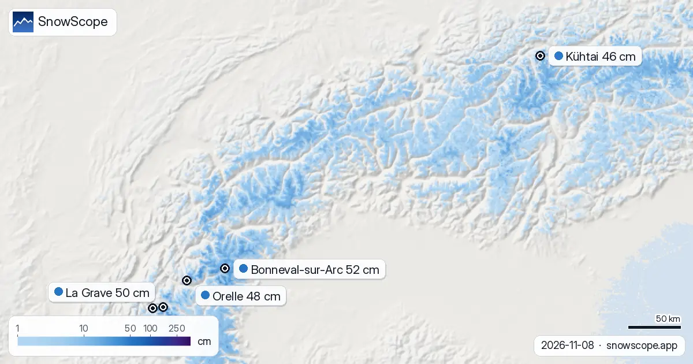
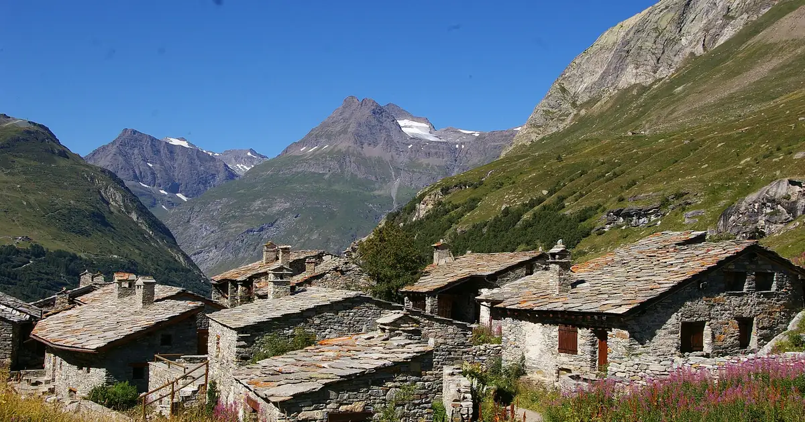
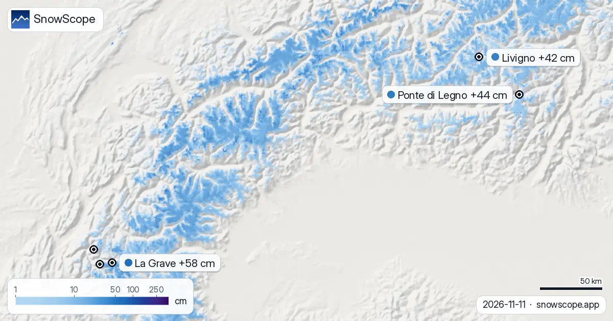

Équipement de ski pour La Grave aujourd'hui dans les Alpes : prêt pour une chute de neige en approche (8 novembre)
Notre modèle de neige et notre prévision du jour dans les Alpes annoncent une chute de neige en approche et de l'air doux qui peut laisser une croûte. Ci-dessous : quoi emporter et porter dans chaque station, et le meilleur moment pour skier. Sur le terrain, nous avons toujours une sonde ; ces chiffres disent où aller, la sonde dit ce qu'il y a sous les skis.
Consultez les prévisions neige en temps réel pour Bonneval-sur-Arc sur l'application SnowScopeHauteurs de neige, alertes poudreuse et carte 3D, gratuitement.
À quoi ressemble la neige aujourd'hui
Une chute de neige en approche (20 cm ou plus prévus ces prochains jours) : La Grave (+32 cm) et Les Deux Alpes (+28 cm).
De l'air doux qui peut laisser une croûte (limite pluie-neige au-dessus du sommet un jour doux, sans beaucoup de neige fraîche) : Kühtai.
| Station | Hauteur de neige | Neige fraîche, 72 h | Attendu, jours suivants | Sommet |
|---|---|---|---|---|
| Bonneval-sur-Arc | 52 cm | 9 cm | 11 cm | 2 948 m |
| La Grave | 50 cm | 12 cm | 32 cm | 3 543 m |
| Orelle | 48 cm | 8 cm | 15 cm | 3 221 m |
| Les Deux Alpes | 47 cm | 8 cm | 28 cm | 3 511 m |
| Kühtai | 46 cm | 3 cm | 9 cm | 2 507 m |

Le meilleur moment et le meilleur endroit
Les prévisions de tempête bougent, alors regardez la carte à nouveau la veille du départ.
Restez sur les pentes les plus hautes, là où il fait le plus froid.
Ce que nous emporterions
Emportez veste et pantalon imperméables, une deuxième paire de gants et un écran pour faible luminosité ; pour la route, pneus hiver ou chaînes selon les règles locales.
Veste de pluie pour les heures humides, puis croûte dure après le regel : carres, casque, pistes damées.
Station par station
Bonneval-sur-Arc (sommet 2 948 m) : autour de 52 cm en altitude, 9 cm de neige fraîche en 72 heures et 11 cm prévus ces prochains jours, et l'isotherme 0 °C varie entre 2 480 m et 3 060 m.
À La Grave (sommet 3 543 m), il y a environ 50 cm en haut du domaine, avec 12 cm de neige fraîche en 72 heures et 32 cm encore à venir, et l'isotherme 0 °C varie entre 2 790 m et 3 210 m.
Orelle (sommet 3 221 m) : autour de 48 cm en altitude, 8 cm de neige fraîche en 72 heures et 15 cm prévus ces prochains jours, et l'isotherme 0 °C varie entre 2 570 m et 3 060 m.
À Les Deux Alpes (sommet 3 511 m), il y a environ 47 cm en haut du domaine, avec 8 cm de neige fraîche en 72 heures et 28 cm encore à venir, et l'isotherme 0 °C varie entre 2 560 m et 3 070 m.
Kühtai (sommet 2 507 m) : autour de 46 cm en altitude, 3 cm de neige fraîche en 72 heures et 9 cm prévus ces prochains jours, et l'isotherme 0 °C varie entre 2 080 m et 2 980 m.
Matériel de sécurité hors-piste
Hors des pistes damées, emportez un détecteur de victimes d'avalanche, une pelle et une sonde, sachez vous en servir et ne partez jamais seul. Lisez d'abord le bulletin d'avalanche officiel.
Conseils aux skieurs
- Les magasins de ski locaux connaissent la neige du jour : louez sur place, ou faites entretenir vos propres skis.
- De la neige sur la carte ne veut pas dire que la station est ouverte : vérifiez remontées et dates sur son site.
- Avant toute sortie hors-piste ou en randonnée, lisez le bulletin d'avalanche officiel (liens ci-dessous).
- L'isotherme 0 °C est une prévision et peut se déplacer de plusieurs centaines de mètres, alors regardez la carte à nouveau la veille.
À propos de ces chiffres
Les hauteurs de neige des stations sont la neige la plus épaisse sur le haut du domaine, d'après le modèle de neige SnowScope (environ 1 km, calcul du 8 novembre) ; ce sont des estimations pour une zone, pas une mesure en un point. Les valeurs des stations de mesure sont mesurées à la date indiquée. Les prévisions peuvent changer. Consultez toujours le bulletin d'avalanche officiel avant le hors-piste.
Bulletins d'avalanche officiels: EAWS (Alps)
Citer ce bulletin
Pour la recherche, l'enseignement ou la presse : chiffres et graphiques réutilisables librement sous CC BY 4.0 avec cette citation.
SnowScope (2026), Équipement de ski pour La Grave aujourd'hui dans les Alpes : prêt pour une chute de neige en approche (8 novembre), https://snowscope.app/blog/fr/2026/11/alps-what-to-bring-ski-gear-conditions-8-november-2026.html, consulté le 2026-11-08
SnowScope (Atlas Labs). (2026, November 8). Équipement de ski pour La Grave aujourd'hui dans les Alpes : prêt pour une chute de neige en approche (8 novembre). SnowScope snow reports. https://snowscope.app/blog/fr/2026/11/alps-what-to-bring-ski-gear-conditions-8-november-2026.html
BibTeX
@misc{snowscope2026alpswhattobringskigearco,
author = {{SnowScope (Atlas Labs)}},
title = {Équipement de ski pour La Grave aujourd'hui dans les Alpes : prêt pour une chute de neige en approche (8 novembre)},
year = {2026},
month = nov,
howpublished = {\url{https://snowscope.app/blog/fr/2026/11/alps-what-to-bring-ski-gear-conditions-8-november-2026.html}},
note = {Published 2026-11-09 11:38 UTC; accessed 2026-11-08}
}· CC BY 4.0 · Méthodes, données et outils →
Bonneval-sur-Arc : neige et température selon l'altitude, cet hiver vs l'hiver dernier (outils) →
Suivre Bonneval-sur-Arc
Gratuit : un message quand la neige arrive, et la météo chaque matin.
Autres bulletins neige

Portrait de Bonneval-sur-Arc en Haute-Maurienne : toits de lauze, un col fermé, un petit domaine et une neige étonnamment épaisse, d'après 46 hivers passés de notre historique.

50 cm en haut du domaine : voilà pourquoi La Grave est en tête de notre liste. Nous avons combiné la hauteur de neige du jour, la neige fraîche des …

Les Deux Alpes, prévisions neige comparées à la région : 51 cm d'ici le 14 novembre. La surface enneigée est passée de 45 820 km² le 9 novembre à …